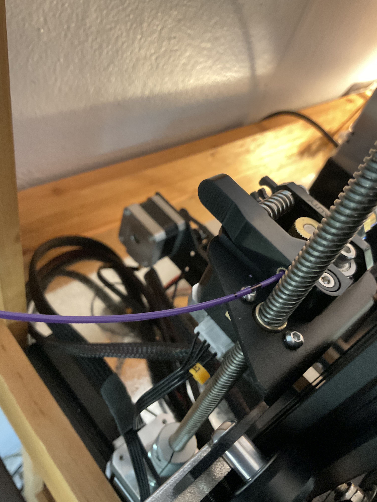
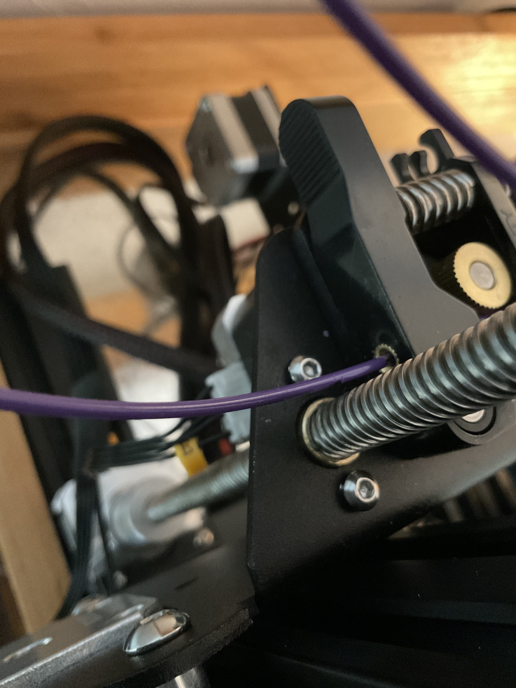
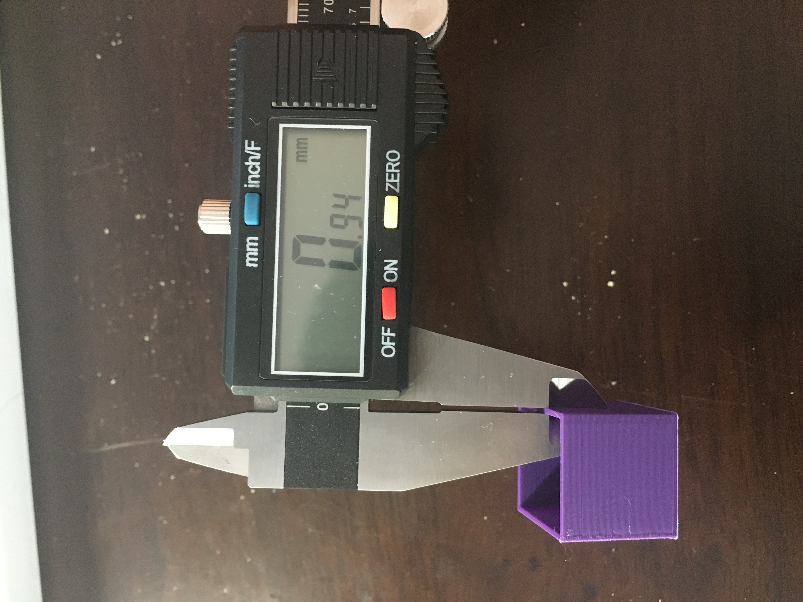
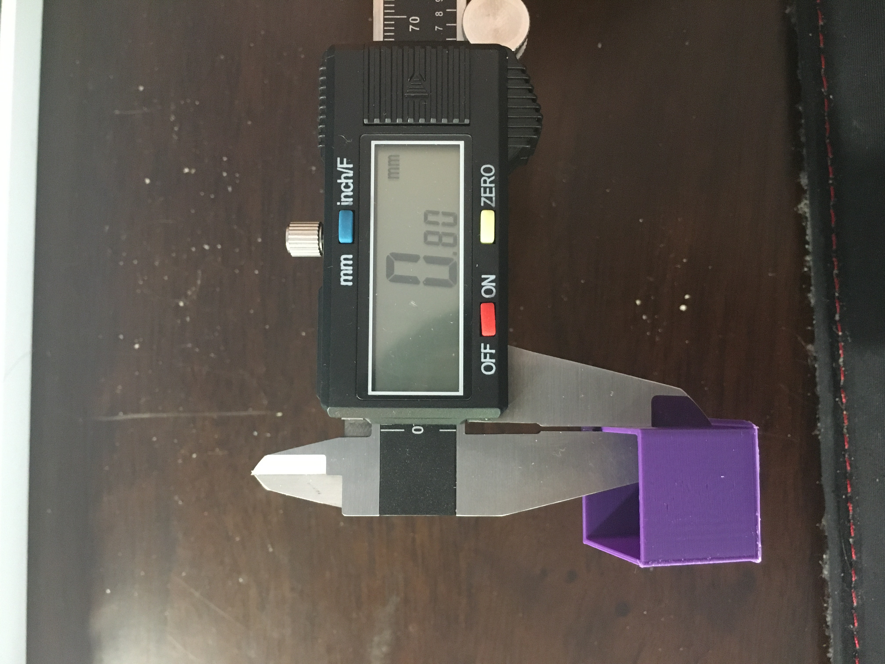

extruder calibration! tolerances!
While working on homework prints for hcde533, I noticed when printing single extrusion cylinders that the wall thickness was considerably bigger than the expected 0.4mm for a single wall extrusion. So, more calibration! I followed this video
part 1: e-steps
procedure:
- heat nozzle to printing temp (200* is what I'm using for my filament)
- measure filament 100mm back from extruder entrance using calipers
- make an additional another mark 10mm back (i.e. 110mm from extruder entrance). This is used in the case that we over-extrude in the following steps.
- from the printer interface, select motion-->extruder-->100mm to run 100mm of filament through the extruder
- measure the distance from the extruder entrance to the mark made earlier. i measured 10.5mm, meaning i under-extruded by ~10.5mm - only 89.5mm of filament went through the extruder
- calculate the new e-step value (the current e-step value can be found in the motion menu, default is 93 steps/mm). To calculate:
expected length (mm) * current steps/mm = current steps --> current steps/actual length(mm) = new steps/mm
for me, this turned out to be: 100mm * 93 steps/mm = 9300 steps --> 9300 steps/89.5mm = 104.0 steps/mm as my new value. - repeat from beginning again to confirm the new estep value gives desired results


procedure:
- print a 20 mm cube with an open top; wall thickness = 0.8mm, wall count = 2, flow = 100%
- measure the resulting wall thickness, taking 2 measurements per side (8 total) and average. my average came out to 0.92mm
- calculate new flow rate, where desired thickness/actual thickness = flow rate.
for me, this came out to: 0.8mm/0.92mm = 86.9% - print again using new flow rate & measure


This was a super fun calibration to perform, mostly because it all just... worked. I'm curious about how the step value and flow rate might change over time/different prints- this will be something to look out for.